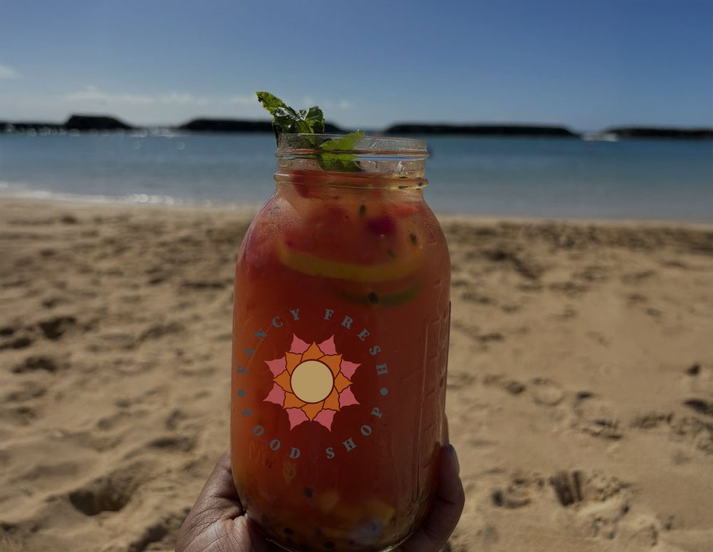

Logo Design
the scope
Year: Fall 2025
Client: JKC Wellness
Role: Designer
Deliverable: App Desing
Duration: Semester
Client: JKC Wellness
Role: Designer
Deliverable: App Desing
Duration: Semester
Softwares: Figma, Photoshop, Illustrator, After Effects, CapCut
Tags: UX, UI, App, Design, Portfolio Entry
Profession: Student
Tags: UX, UI, App, Design, Portfolio Entry
Profession: Student
the challenge
In this assignment, I was tasked with redesigning a logo for a business of my choice. While the final logo is the ultimate deliverable, my primary focus was on the creative process that led to its development, as this process is as crucial as the outcome. The final logo has to be distinctive, memorable, scalable, adaptable, and appropriate for the selected company.
the solution
For this project, I decided to focus on a small local business, Fancy Fresh Food Shop. Given that their name is quite long, I had to be thoughtful about how to incorporate it into the logo design. I drew inspiration from elements found within the shop, such as blenders, fruits, and vegetables, while keeping the design modern and simplified for a clean, streamlined look.

Research & Sketching


A simple flow that helps the user select a body area, discover guided massage techniques for that area, and access related anatomy and instructional videos.
The Finalists

option 1:
Salzburger Stierwascher
I chose the top of a pineapple as the main element of the logo because it's a widely recognized tropical fruit and one of many key ingredients in Fancy Fresh Food Shop's drinks. The top view of a pineapple is not only visually striking but also naturally symmetrical, making it an ideal shape for a clean and modern logo. Its unique form adds a sense of freshness and energy while still reflecting the vibrant, natural ingredients used by the shop.

option 2:
Sound of Alpine
I drew inspiration from the aerial view of a blender, a staple tool in Fancy Fresh Food Shop's daily operations. From above, the blender's blades create a dynamic and recognizable shape that represents motion, energy, and freshness—qualities that reflect the brand's identity. This perspective also allowed me to simplify the form into a modern, abstract symbol while still connecting it directly to the shop's focus on blended drinks and healthy ingredients.

option 3:
Edelwiss
I found inspiration in the base of a bok choy—when sliced, it reveals a beautiful, rose-like pattern, one of nature's unexpected and stunning designs. Its natural form not only connects directly to the shop's fresh, plant-based ingredients but also adds an element of elegance and organic beauty to the logo. By highlighting this detail, I was able to create a design that feels both intentional and uniquely tied to the brand.
Final Decision
I chose the top of a pineapple as a key element in the logo because of its unique and instantly recognizable shape. Unlike the common side view, the top view offers a fresh perspective that feels modern, symmetrical, and visually dynamic. The pineapple itself is one of the most popular tropical fruits and a signature ingredient in many of Fancy Fresh Food Shop's drinks, making it a meaningful representation of the brand. Its spiky, crown-like leaves also add a sense of energy and freshness, while symbolizing hospitality and warmth—qualities that align with the shop's inviting atmosphere and community-focused values. This design choice helped me create a logo that feels bold, clean, and rooted in the essence of the business.
